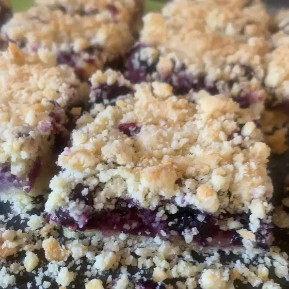

Blueberry Crunch Bars

Description
Cheap and easy to make. Kids love them. Any berry can be used.
Ingredients
- white sugar
- baking powder
- all-purpose flour
- shortening
- eggs
- fresh blueberries
- cornstarch
Steps
- Preheat the oven to 375 degrees F (190 degrees C). Grease a 9x13 inch pan.
- In a medium bowl, stir together 1 cup sugar, 3 cups flour, and baking powder. Mix in salt and cinnamon, if desired. Use a fork or pastry cutter to blend in the shortening and egg. Dough will be crumbly. Pat half of dough into the prepared pan.
- In another bowl, stir together the sugar and cornstarch. Gently mix in the blueberries. Sprinkle the blueberry mixture evenly over the crust. Crumble remaining dough over the berry layer.
- Bake in preheated oven for 45 minutes, or until top is slightly brown. Cool completely before cutting into squares.